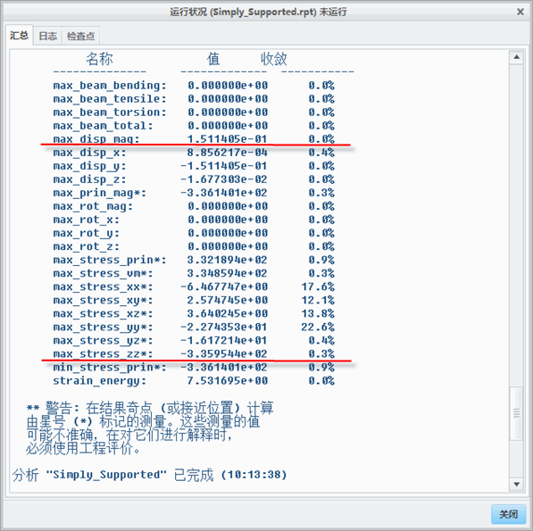

过程: 使用 p 方法
假定背景
“关闭窗口”(Close Window) “拭除未显示的”(Erase Not Displayed)
“拭除未显示的”(Erase Not Displayed) 
 Simulate_Analysis\PMethod
Simulate_Analysis\PMethod
 SIMPLY_SUPPORTED_SIMULATE.PRT
SIMPLY_SUPPORTED_SIMULATE.PRT

-
任务 1. 打开并调查几何模型。
1. 对于 Creo Simulate 用户，请打开 SIMPLY_SUPPORTED_SIMULATE.PRT。已在模型中完成并存储对称切割。所有模拟特征都应已被定义。
2. 对于 Creo Simulate 用户，请打开 SIMPLY_SUPPORTED.PRT。检查 CAD 几何。出于模拟目的而准备的模型应该看起来像图中所示的模型。
-
任务 2. 使用 AutoGEM 工具调查有限元控制和网格。
1. 在功能区中，选择“精细模型”(Refine Model) 选项卡。
2. 从 AutoGEM 组中单击AutoGEM
 。将出现 AutoGEM 对话框。
。将出现 AutoGEM 对话框。
3. 使用默认设置，单击“创建”(Create)。将出现 AutoGEM 摘要和诊断：AutoGEM 网格窗口。单个砖实体元素被创建，如图所示。
4. 检查网格。在所有对话框中单击“关闭”(Close)。
5. 提示保存网格时单击“否”(No)。
-
任务 3. 运行在模型中定义的静态分析。
1. 在功能区中，选择“主页”(Home) 选项卡。
2. 在“运行”(Run) 组中单击“分析和研究”(Analyses and Studies)
 。将出现“分析和设计研究”(Analyses and Design Studies) 对话框。
。将出现“分析和设计研究”(Analyses and Design Studies) 对话框。
3. 选择 Simply_Supported。
4. 单击“编辑”(Edit) > “分析/研究”(Analysis/Study)。将出现“静态分析定义”(Static Analysis Definition) 对话框。
5. 查看“静态分析”(Static Analysis) 设置。单击“确定”(OK)。
6. 单击“配置运行设置”(Configure Run Settings)
 。将出现“运行设置”(Run Settings) 对话框。
。将出现“运行设置”(Run Settings) 对话框。
7. 查看“运行”(Run) 设置。单击“确定”(OK)。
8. 单击“开始运行”(Start Run)
 以运行静态分析。单击“是”(Yes) 以运行交互诊断。运行完成后，将出现“诊断”(Diagnostics) 对话框。
以运行静态分析。单击“是”(Yes) 以运行交互诊断。运行完成后，将出现“诊断”(Diagnostics) 对话框。
9. 单击“显示研究状况”(Display Study Status)
 以监视运行状况。将出现“运行状况”(Run Status) 对话框。不要关闭任何对话框。
以监视运行状况。将出现“运行状况”(Run Status) 对话框。不要关闭任何对话框。
-
任务 4. 查看汇总报告。
1. 在“运行状况”(Run Status) 对话框中查看汇总报告。注意最大位移值 (以单位 mm 表示) 和纵向应力 (MPa) 值。校验这些值并将其与解析解相比较。
2. 在“运行状况”(Run Status) 对话框和“诊断”(Diagnostics) 窗口中，单击“关闭”(Close)。

-
任务 5. 创建“结果”(Results) 窗口并解释结果。
1. 在“分析和设计研究”(Analyses and Design Studies) 对话框中，选择刚完成的分析。单击“审阅结果”(Review Results)
 。将出现“结果窗口定义”(Result Window Definition) 对话框。
。将出现“结果窗口定义”(Result Window Definition) 对话框。
2. 完成对话框和“数量”(Quantity) 选项卡字段，如图所示。
- 在“名称”(Name) 字段中，键入 MAX_DISPL。
- 在“标题”(Title) 字段中，键入 Convergence Maximum Displacement。
- 从“显示类型”(Display Type) 下拉菜单中选择“图形”(Graph)。
- 选择“数量”(Quantity) 选项卡。
- 从“图形纵坐标 (竖直) 轴”(Graph Ordinate (Vertical) Axis) 下拉菜单中选择“测量”(Measure)。
- 单击“测量”(Measures)
 。将出现“测量”(Measures) 对话框。
。将出现“测量”(Measures) 对话框。
- 选择 max_disp_mag，然后单击“确定”(OK)。
3. 单击“确定并显示”(OK and Show) 以显示图形。在审阅后关闭结果窗口。不要保存当前结果窗口。
4. 在“分析和设计研究”(Analyses and Design Studies) 对话框中，选择刚完成的分析。单击“审阅结果”(Review Results)
。将出现“结果窗口定义”(Result Window Definition) 对话框。
5. 完成对话框和“数量”(Quantity) 选项卡字段，如图所示。
- 在“名称”(Name) 字段中，键入 MAX_STRESS。
- 在“标题”(Title) 字段中，键入 Convergence Maximum Longitudinal Stress。
- 从“显示类型”(Display type) 下拉菜单中选择“图形”(Graph)。
- 选择“数量”(Quantity) 选项卡。
- 从“图形纵坐标 (竖直) 轴”(Graph Ordinate (Vertical) Axis) 下拉菜单中选择“测量”(Measure)。
- 单击“测量”(Measures) 。将出现“测量”(Measures) 对话框。
- 选择 max_stress_zz，然后单击“确定”(OK)。
6. 单击“确定并显示”(OK and Show) 以显示图形。在审阅后关闭结果窗口。不要保存当前结果窗口。
过程就此结束。